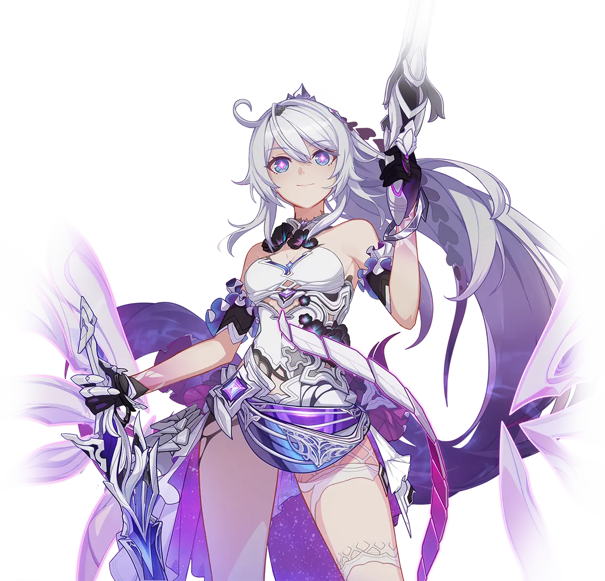

向下，续写旅程SCROLL TO EXPLORE
FROM THE EARTHTO THE MOON∞
01 / THE JOURNEY CONTINUES✧
FROM FINALITY, TO A NEW BEGINNING
然后，向着明天。
这里是属于琪亚娜·卡斯兰娜的小小角落。
把那些闪闪发光的瞬间，
留在这片为她而亮的星空里。
May you, the beauty of this world,
always shine.

舰长～
♡琪亚娜祝你天天开心哦～
02 / A MELODY THAT STAYS✧
TO YOU, ACROSS THE STARS
琪宝请你
听听歌。
Music is so good,
even devil may cry(
琪宝请你听听歌
「Da Capo」
HOYO-MiX
未播放
0:002:1403 / FLY ME TO THE MOON✧
FlyMe2theMoon
和究极无敌巨TM可爱的琪亚娜一起去月球吧
SPACE 或 ↑ 跳跃 · 也可轻触画面
OUR STORY NEVER REALLY ENDS
下一站，Kiana会和你一起哦
火光与勇气编织成灿烂诗篇，再捎上一份少女永恒的纯洁心愿，飞往希冀之所在，飞往下一个光年
Kiana，出击！ 去留言板聊聊 ，在新标签页打开 GitHub Issues